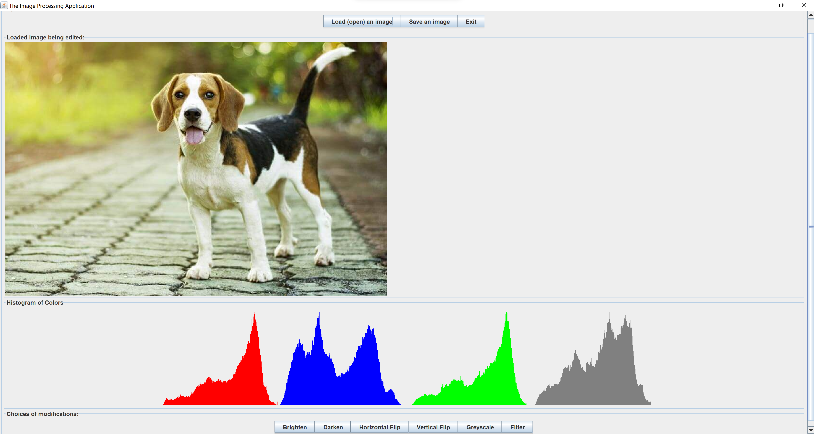
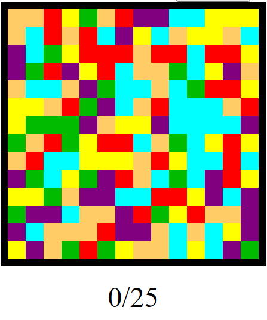
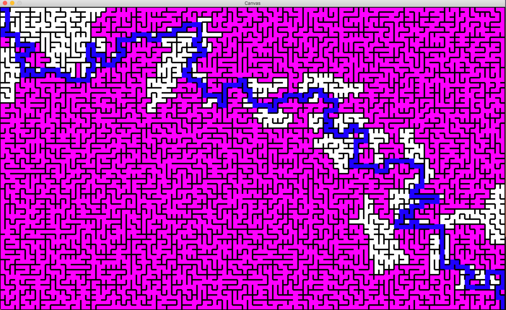
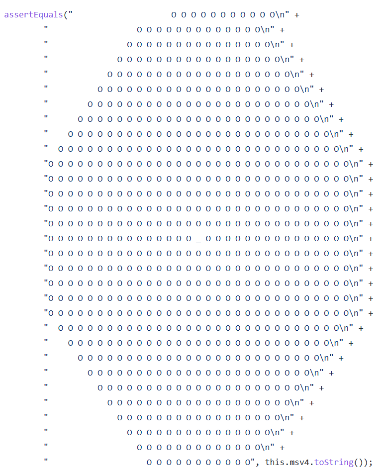

- Utilized Java MVC (Model, View, Controller) principles to design a program that modifies, loads, and saves images of different formats (.ppm, .jpeg, .png, etc).
- Implemented different editing preferences for users, such as brightening, darkening, gray scaling, color-blocking.
- Utilized Java Swing to implement a functional GUI neatly displaying all features, implemented under 1 week deadline and thoroughly tested with JUnit.
View It Here!
- Simulated the online Flood-It game, where the objective is to “flood” entire board with 1 color in < 25 steps.
- Included waterfall animation that gradually floods cells one by one with a tick function that utilizes Depth-First Search for UI improvement.
- Gave user ability to instantly restart/reset game if insufficient moves were made and gradually keeps track of score.
View It Here!


- Implemented a solvable maze utilizing the concept of Kruskal’s Algorithm.
- Solving speed optimized with either Breadth-First or Depth-First search – searches all possible pathways going to and from each cell of maze.
- Designed tick function that animates the solving process in a gradual waterfall fashion for better UI.
View It Here!
- Utilized Java MVC (Model, View, Controller) principles to simulate the popular game marble solitaire.
- User has ability to start the game, make moves and receive information on invalid moves made.
- Thoroughly tested with JUnit Testing.
View It Here!
